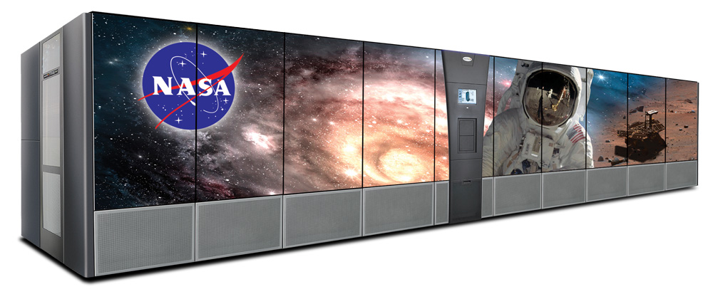
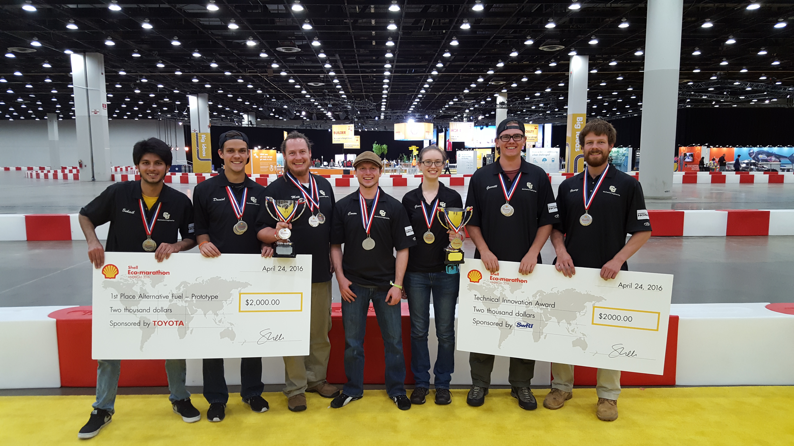
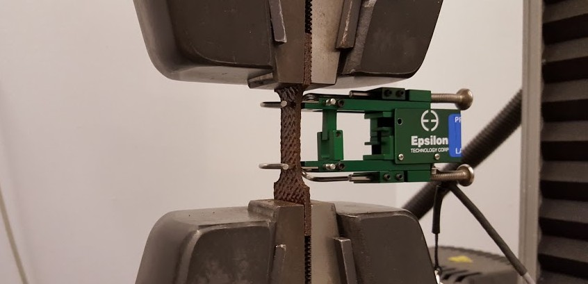

La foto de arriba es de la pista de prueba del Shell Eco-Marathon en 2016 en Detroit. Diseñamos y construimos el vehículo que ves y
ganamos el premio para el grupo de vehiculos de etanol por lograr 1,214 millas por galón. Ademas, recibimos el premio para la
mejor inovación tecnica por usar materiales naturales para el cuerpo del vehículo (y por eso tiene ese color cafe). Pero explicaré
más sobre este proyecto abajo, voy a incluir mi experiencia ingeniería en forma cronológica.

He estado trabajando para Spectra Logic hasta que me gradué en 2016, cambiando equipos un par de veces y el tipo de ingeniería tambien. Por
la mayor parte, he trabajado con lo que llamamos, "bibliotecas de cinta", y es una de esas en la foto de arriba. Sí, todavía es comun
almacenar datos usando cinta magnetica. Vendemos estas grandes bibliotecas de cinta a unos clientes bien conocidos: NASA, CERN, y Los
Alamos National Laboratory son solamente unos de ellos.
Empecé en el equipo de software para el movemiento de los robótics dentro de la biblioteca. Probaba los lanzamientos de software para asergurar
la calidad y verificar que los defectos habían estado arreglados. A pesar de que no escribía codigo de producción, disfrutaba de ser parte de un
equipo de software y aprender sobre los procesos que utilizaban.
Luego, me mudé al nuestro edificio de fabricación y trabajaba como ingeniero mecánico para el equipo Sustaining. Apoyaba la fabricación por descubir
la razón por los fallos de pruebas y también diseñaba pedazos para facilitar la prueba de nuestras robóticos. Sin embargo, siguía estando interesado
por el desarrollo de software y luego empecé trabajando con los ingenieros de software en Sustaining para arreglar defectos y implimir puequenas funciones
para dos aplicaciónes de web escrito en Ruby on Rails.
Hace unos años, me mudé a una puesta de ingeniería sistema en el equipo de Hardware R&D que estaba enfocado por la mayor parte en programación.
Mi proyecta primária para este grupo estuvo desarrollando un paquete de Python que apoyaba comunicación en un red CAN con todos los depositivos
y robóticos en una biblioteca de cinta. Este paquete estaba usado para implimir muchas programas de software para probar nuevo hardware y
firmware y también estaba utilizado por el equipo de Sustaining. Ademas, creé un proceso CI para el desarrollo, alojé el paquete en un servidor local,
y automaticé el despligue de documentación generado del API.
En septiembre 2021 empecé en mi puesta actual como ingeniero de software en el equipo de Test Automation. Todavía estoy trabajando con bibliotecas de
cinta, pero esta vez solamente en el lado de software - programando en Go para automatizar la prueba de una nueva aplicación de software.
He aprendido un monton durante mi tiempo en Spectra Logic - crecí mucho como ingeniero mecanico mientras estudiaba informática y hice la transición
al desarrollo de software a tiempo completo. He formado un parte importante del equipo y por eso he crecido mucho en mi capacidad para la ingeniería.

El equipo despues de los premios
The Shell Eco-Marathon is a competition for high school and college student teams to design and build ultra-energy-efficient vehicles. The
Mechanical Engineering department at CU Boulder coordinated a team as one of the options for our senior capstone project, which I joined along
with six other students (I'm second from the left in the above photo).
Most of the vehicles that achieve the highest fuel efficiency use carbon fiber extensively - it is very lightweight and strong and is perfect
for this application. However, it is also very energy-intensive to manufacture and greatly increases the embodied energy of the vehicle.
We wanted to fully embrace the "eco" aspect of the competition by using natural and biodegradable materials wherever we could. These materials,
while not as light and rigid, still had impressive mechanical properties, would decrease the embodied energy of our vehicle, and would differentiate
ourselves from the crowd.

Tensile test of an NFC sample in the Instron
Building on research done by Dr. Wil Srubar and his group, the natural fiber composite (NFC) material we chose to use was comprised of jute as the
fiber (commonly used to make burlap) and a mixture of gelatin, water, and tannins as the resin. There was an incredible amount of experimentation,
material testing, and data analysis required to determine the optimal proportions of water, gelatin, and tannins in the resin and the best coating
to protect against water damage.
In the end we were not able to use NFCs in the chassis as the proposed hybrid chassis had weak points where the necessary aluminum tubes met the
NFC tubes. However, we were able to successfully mold NFC panels and use them for the body of the vehicle.
In April 2016 we packed up our vehicle into a U-Haul and drove out to Detroit for the Eco-Marathon competition. It was a blast and we enjoyed
meeting teams from all over the country and from Latin America too. There may have been some last-minute welding in order to pass the safety
inspection, but on "race" day our vehicle ran great and we were thrilled to bring home two trophies.